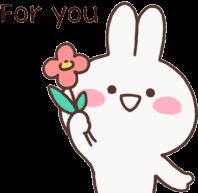

MWUAPS

I'll leave this one here

Scroll to openn!!!!!
Malapit na!!!!
For you my Love

Red Tulips
Red tulips symbolize true love and passion.
They are often given to express romantic love and deep affection.
TADAAAAAAAAA!!!!! Flowers For You po
jijadjanaiudjsjd
jijadjanaiudjsjd
jijadjanaiudjsjd
jijadjanaiudjsjd
TIWTS

 Sa mundong walang kulay,ng dumating kay nagkaroon ito ng buhay.
Sa mundong walang kulay,ng dumating kay nagkaroon ito ng buhay.
sa iyong mga ngiti , puso ko'y tila nag wagi.
Sa sulok ng kwarto, ako'y napapa ngiti mo.
Pasensya na sapagkat ako'y torpe ,
Ngunit ito ang alam ko,
ang katulad ko'y parang
Pulang mga tulips,
sapagkat ako'y nagtataglay ng pagmamahal na labis.
Alam ko kung ga'no ka nahirapan ,
Kaya naman hayaan mo'kong pasayahin ang iyong kinabukasan.
Tandaan mo, na nandito lang ako para sa'yo.
hindi kita iiwan , sapagkat ang puso ko'y ikaw lang ang nilalaman.
Sa mga oras na tayo ay malayo,
Tandaan mo na tayo muli ay magtatagpo.
Wala man ako sa iyong tabi ,
Ikaw naman lagi ang aking baby.
PS: I don't know how to Make
tula po love hehehe i just
tried since sabi mo gusto mo
gawan ka ni roseanne ng tula.